|
Результаты
Спрятать верно решенные Рекомендуем справочные материалы на Сайте элементарной математики Дмитрия Гущина Из части B правильно решено 0 из 92 заданий. Решения ↑ Задание 1 № 500169 тип B13 (решено неверно или не решено) Заказ на 300 деталей первый рабочий выполняет на 5 часов быстрее, чем второй. Сколько деталей в час делает первый рабочий, если известно, что за час он делает на 5 деталей больше, чем второй? Решение. Обозначим 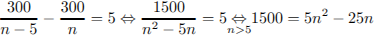 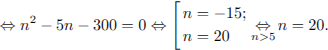 Ответ: 20. Ваш ответ: нет ответа. Правильный ответ: 20 ↑ Задание 2 № 500040 тип B13 (решено неверно или не решено) В понедельник акции компании подорожали на некоторое количество процентов, а во вторник подешевели на то же самое количество процентов. В результате они стали стоить на 4% дешевле, чем при открытии торгов в понедельник. На сколько процентов подорожали акции компании в понедельник? Решение. Обозначим первоначальную стоимость акций за 1. Пусть в понедельник акции компании подорожали на , и их стоимость стала составлять 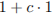. Во вторник акции подешевели на , и их стоимость стала составлять 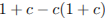. В результате они стали стоить на дешевле, чем при открытии торгов в понедельник, то есть 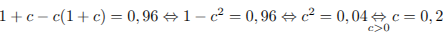. Следовательно, акции дорожали, а потом дешевели на .Ответ: 20. Примечание. Приведем другое решение. Пусть изначально акции стоили , а на — десятичную запись процентов, на которые оба раза менялась цена акций. Тогда после подорожания цена акций стала 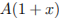, а после удешевления — 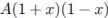. Поскольку в итоге цена стала составлять 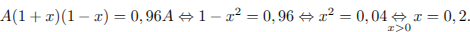 Ваш ответ: нет ответа. Правильный ответ: 20 ↑ Задание 3 № 99606 тип B13 (решено неверно или не решено) Первые два часа автомобиль ехал со скоростью 50 км/ч, следующий час – со скоростью 100 км/ч, а затем два часа – со скоростью 75 км/ч. Найдите среднюю скорость автомобиля на протяжении всего пути. Ответ дайте в км/ч. Решение. Чтобы найти среднюю скорость на протяжении пути, нужно весь путь разделить на все время движения. Средняя скорость равна: 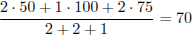 км/ч. Ответ: 70. Ваш ответ: нет ответа. Правильный ответ: 70 ↑ Задание 4 № 99583 тип B13 (решено неверно или не решено) Грузовик перевозит партию щебня массой 210 тонн, ежедневно увеличивая норму перевозки на одно и то же число тонн. Известно, что за первый день было перевезено 2 тонны щебня. Определите, сколько тонн щебня было перевезено за девятый день, если вся работа была выполнена за 14 дней. Решение. Пусть в первый день грузовик перевез 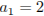 тонны щебня, во второй — 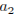, …, в последний — тонн; всего было перевезено тонн; норма перевозки увеличивалась каждодневно на тонн. Тогда 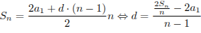. Тогда за девятый день было перевезено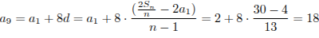 (тонн). Ответ: 18. Ваш ответ: нет ответа. Правильный ответ: 18 ↑ Задание 5 № 26594 тип B13 (решено неверно или не решено) На изготовление 475 деталей первый рабочий тратит на 6 часов меньше, чем второй рабочий на изготовление 550 таких же деталей. Известно, что первый рабочий за час делает на 3 детали больше, чем второй. Сколько деталей в час делает первый рабочий? Решение. Обозначим 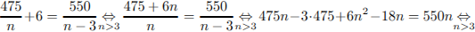 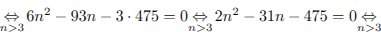 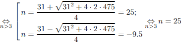. Таким образом, первый рабочий делает 25 деталей в часОтвет: 25. Ваш ответ: нет ответа. Правильный ответ: 25 ↑ Задание 6 № 26598 тип B13 (решено неверно или не решено) Первая труба пропускает на 1 литр воды в минуту меньше, чем вторая. Сколько литров воды в минуту пропускает вторая труба, если резервуар объемом 110 литров она заполняет на 1 минуту быстрее, чем первая труба? Решение. Пусть 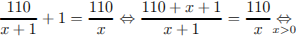 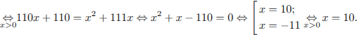 Значит, первая труба пропускает 10, а вторая — 11 литров воды в минуту. Ответ: 11. Ваш ответ: нет ответа. Правильный ответ: 11 ↑ Задание 7 № 26585 тип B13 (решено неверно или не решено) Моторная лодка прошла против течения реки 112 км и вернулась в пункт отправления, затратив на обратный путь на 6 часов меньше. Найдите скорость течения, если скорость лодки в неподвижной воде равна 11 км/ч. Ответ дайте в км/ч. Решение. Пусть км/ч – скорость течения реки, тогда скорость лодки по течению равна 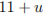 км/ч, а скорость лодки против течения равна 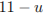 км/ч. На обратный путь лодка затратила на 6 часов меньше, отсюда имеем: 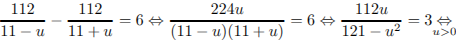 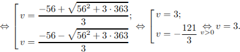 Таким образом, скорость течения реки равна 3 км/ч. Ответ: 3. Ваш ответ: нет ответа. Правильный ответ: 3 ↑ Задание 8 № 111867 тип B13 (решено неверно или не решено) Грузовик перевозит партию щебня массой 60 тонн, ежедневно увеличивая норму перевозки на одно и то же число тонн. Известно, что за первый день было перевезено 4 тонны щебня. Определите, сколько тонн щебня было перевезено за пятый день, если вся работа была выполнена за 8 дней. Решение. Пусть в первый день грузовик перевез 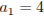 тонны щебня, во второй — , …, в последний — тонн; всего было перевезено тонн; норма перевозки увеличивалась ежедневно на тонн. Поскольку . Имеем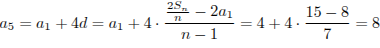. Следовательно, за пятый день было перевезено 8 тонн щебня.Ответ: 8. Ваш ответ: нет ответа. Правильный ответ: 8 Владимир Семёнов (Балаково) 20.05.2013 18:20: 4+(4+X)+(4+2X)+(4+3X)+(4+4X)+(4+5X)+(4+6X)+(4+7X)=60 32+28X=60 X=1 __ Проверим: 4+4+1+4+2+4+3+4+4+4+5+4+6+4+7=60 60=60 Хоть решение и не такое как ваше зато сходится. Петр Мурзин (Казань):
По сути, Вы расписали явно рекуррентную формулу для суммы арифметической прогрессии. Наглядное решение.=) Мария Ву 31.05.2013 14:16: А разве ответ не 36 будет? Я решала не по формуле, а чисто логически. Если ежедневно норма перевозки увеличивается на одно и то же число, как ответ может быть 8 за пятый день, в то время как за восьмой день - 60? 1 день - 4 2 день - 12 3 день - 20 4 день - 28 5 день - 36 6 день - 44 7 день - 52 8 день - 60 А вот увеличивается на 8 тонн. Петр Мурзин (Казань):
"в то время как за восьмой день - 60?". Внимательно читайте условие: "перевозит партию щебня массой 60 тонн". Это означает, что грузовик всего перевёз 60 тонн. ↑ Задание 9 № 99601 тип B13 (решено неверно или не решено) Теплоход, скорость которого в неподвижной воде равна 25 км/ч, проходит по течению реки и после стоянки возвращается в исходный пункт. Скорость течения равна 3 км/ч, стоянка длится 5 часов, а в исходный пункт теплоход возвращается через 30 часов после отплытия из него. Сколько километров прошел теплоход за весь рейс? Решение. Пусть весь путь теплохода равен км. Время в пути составляет 30 часов, из которых 5 часов – стоянка: 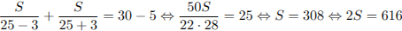. Ответ: 616. Ваш ответ: нет ответа. Правильный ответ: 616 ↑ Задание 10 № 26584 тип B13 (решено неверно или не решено) Два велосипедиста одновременно отправились в 88–километровый пробег. Первый ехал со скоростью, на 3 км/ч большей, чем скорость второго, и прибыл к финишу на 3 часа раньше второго. Найти скорость велосипедиста, пришедшего к финишу вторым. Ответ дайте в км/ч. Решение. Пусть 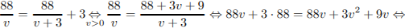 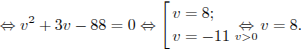 Таким образом, скорость велосипедиста, пришедшего к финишу вторым, равна 8 км/ч. Ответ: 8. Ваш ответ: нет ответа. Правильный ответ: 8 ↑ Задание 11 № 26599 тип B13 (решено неверно или не решено) Первая труба пропускает на 1 литр воды в минуту меньше, чем вторая. Сколько литров воды в минуту пропускает первая труба, если резервуар объемом 110 литров она заполняет на 2 минуты дольше, чем вторая труба заполняет резервуар объемом 99 литров? Решение. Пусть 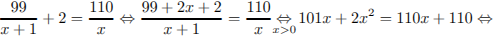 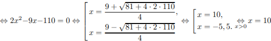. Значит, первая труба пропускает 10 литров, а вторая — 11 литров воды в минуту.Ответ: 10. Ваш ответ: нет ответа. Правильный ответ: 10 ↑ Задание 12 № 26581 тип B13 (решено неверно или не решено) Велосипедист выехал с постоянной скоростью из города A в город B, расстояние между которыми равно 70 км. На следующий день он отправился обратно в A со скоростью на 3 км/ч больше прежней. По дороге он сделал остановку на 3 часа. В результате велосипедист затратил на обратный путь столько же времени, сколько на путь из A в B. Найдите скорость велосипедиста на пути из B в A. Ответ дайте в км/ч. Решение. Пусть
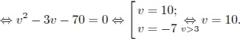 Таким образом, скорость велосипедиста была равна 10 км/ч.Ответ: 10. Ваш ответ: нет ответа. Правильный ответ: 10 ↑ Задание 13 № 26588 тип B13 (решено неверно или не решено) Теплоход проходит по течению реки до пункта назначения 200 км и после стоянки возвращается в пункт отправления. Найдите скорость течения, если скорость теплохода в неподвижной воде равна 15 км/ч, стоянка длится 10 часов, а в пункт отправления теплоход возвращается через 40 часов после отплытия из него. Ответ дайте в км/ч. Решение. Пусть км/ч — скорость течения, тогда скорость теплохода по течению равна 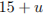 км/ч, а скорость теплохода против течения равна 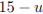 км/ч. На весь путь теплоход затратил 40 – 10 = 30 часов, отсюда имеем: 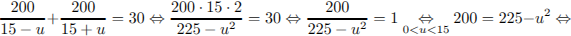 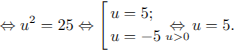 Таким образом, скорость течения реки равна 5 км/ч. Ответ: 5. Ваш ответ: нет ответа. Правильный ответ: 5 ↑ Задание 14 № 99613 тип B13 (решено неверно или не решено) Каждый из двух рабочих одинаковой квалификации может выполнить заказ за 15 часов. Через 3 часа после того, как один из них приступил к выполнению заказа, к нему присоединился второй рабочий, и работу над заказом они довели до конца уже вместе. Сколько часов потребовалось на выполнение всего заказа? Решение. Рабочий выполняет 1/15 часть заказа в час, поэтому за 3 часа он выполнит 1/5 часть заказа. После этого к нему присоединяется второй рабочий, и, работая вместе, два рабочих должны выполнить 4/5 заказа. Чтобы определить время совместной работы, разделим этот объём работы на совместную производительность: 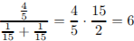 часов. Тем самым, на выполнение всего заказа потребуется 6 + 3 = 9 часов.Ответ: 9. Ваш ответ: нет ответа. Правильный ответ: 9 ↑ Задание 15 № 99611 тип B13 (решено неверно или не решено) По двум параллельным железнодорожным путям в одном направлении следуют пассажирский и товарный поезда, скорости которых равны соответственно 90 км/ч и 30 км/ч. Длина товарного поезда равна 600 метрам. Найдите длину пассажирского поезда, если время, за которое он прошел мимо товарного поезда, равно 1 минуте. Ответ дайте в метрах. Решение. Относительная скорость поездов равна 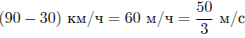 За 60 секунд один поезд проходит мимо другого, то есть преодолевают расстояние равное сумме их длин: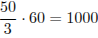 м, поэтому длина пассажирского поезда м.Ответ: 400. Ваш ответ: нет ответа. Правильный ответ: 400 ↑ Задание 16 № 26583 тип B13 (решено неверно или не решено) Два велосипедиста одновременно отправились в 240-километровый пробег. Первый ехал со скоростью, на 1 км/ч большей, чем скорость второго, и прибыл к финишу на 1 час раньше второго. Найти скорость велосипедиста, пришедшего к финишу первым. Ответ дайте в км/ч. Решение. Пусть 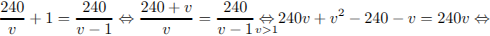 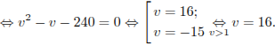 Значит, первым финишировал велосипедист, двигавшийся со скоростью 16 км/ч.Ответ: 16. Ваш ответ: нет ответа. Правильный ответ: 16 ↑ Задание 17 № 26593 тип B13 (решено неверно или не решено) Заказ на 156 деталей первый рабочий выполняет на 1 час быстрее, чем второй. Сколько деталей в час делает первый рабочий, если известно, что он за час делает на 1 деталь больше? Решение. Обозначим Ответ: 13. Ваш ответ: нет ответа. Правильный ответ: 13 ↑ Задание 18 № 99565 тип B13 (решено неверно или не решено) В 2008 году в городском квартале проживало человек. В 2009 году, в результате строительства новых домов, число жителей выросло на , а в 2010 году на по сравнению с 2009 годом. Сколько человек стало проживать в квартале в 2010 году? Решение. В 2009 году число жителей стало человек, а в 2010 году число жителей стало человек. Ответ: 47088. Ваш ответ: нет ответа. Правильный ответ: 47088 ↑ Задание 19 № 26578 тип B13 (решено неверно или не решено) Из пункта A в пункт B одновременно выехали два автомобиля. Первый проехал с постоянной скоростью весь путь. Второй проехал первую половину пути со скоростью 24 км/ч, а вторую половину пути – со скоростью, на 16 км/ч большей скорости первого, в результате чего прибыл в пункт B одновременно с первым автомобилем. Найдите скорость первого автомобиля. Ответ дайте в км/ч. Решение. Пусть Таким образом, скорость первого автомобиля была равна 32 км/ч. Ответ: 32. Ваш ответ: нет ответа. Правильный ответ: 32 ↑ Задание 20 № 26579 тип B13 (решено неверно или не решено) Из пункта A в пункт B одновременно выехали два автомобиля. Первый проехал с постоянной скоростью весь путь. Второй проехал первую половину пути со скоростью, меньшей скорости первого на 13 км/ч, а вторую половину пути – со скоростью 78 км/ч, в результате чего прибыл в пункт В одновременно с первым автомобилем. Найдите скорость первого автомобиля, если известно, что она больше 48 км/ч. Ответ дайте в км/ч. Решение. Пусть Таким образом, скорость первого автомобиля была равна 52 км/ч. Ответ: 52. Ваш ответ: нет ответа. Правильный ответ: 52 ↑ Задание 21 № 99593 тип B13 (решено неверно или не решено) Товарный поезд каждую минуту проезжает на 750 метров меньше, чем скорый, и на путь в 180 км тратит времени на 2 часа больше, чем скорый. Найдите скорость товарного поезда. Ответ дайте в км/ч. Решение. Скорость товарного поезда меньше, чем скорого на 750 м/мин или на
Ответ: 45. Ваш ответ: нет ответа. Правильный ответ: 45 ↑ Задание 22 № 26596 тип B13 (решено неверно или не решено) Двое рабочих, работая вместе, могут выполнить работу за 12 дней. За сколько дней, работая отдельно, выполнит эту работу первый рабочий, если он за два дня выполняет такую же часть работы, какую второй – за три дня? Решение. Обозначим и Тем самым, первый рабочий за день выполняет одну двадцатую всей работы, значит, работая отдельно, он справится с ней за 20 дней. Ответ: 20. Ваш ответ: нет ответа. Правильный ответ: 20 ↑ Задание 23 № 99619 тип B13 (решено неверно или не решено) Первая труба наполняет резервуар на 6 минут дольше, чем вторая. Обе трубы наполняют этот же резервуар за 4 минуты. За сколько минут наполняет этот резервуар одна вторая труба? Решение. Пусть вторая труба наполняет резервуар за x минут, а первая — за x + 6 минут. В одну минуту они наполняют соответственно и часть резервуара. Поскольку за 4 минуты обе трубы заполняют весь резервуар, за одну минуту они наполняеют одну четвертую часть резервуара: . Далее можно решать полученное уравнение. Но можно заметить, что при положительных x функция, находящаяся в левой части уравнения, убывает. Поэтому очевидное решение уравнения Ответ: 6. Ваш ответ: нет ответа. Правильный ответ: 6 ↑ Задание 24 № 99615 тип B13 (решено неверно или не решено) Первый насос наполняет бак за 20 минут, второй — за 30 минут, а третий — за 1 час. За сколько минут наполнят бак три насоса, работая одновременно? Решение. Обозначим объем бака за 1. Тогда три насоса, работая вместе, заполнят бак за минут. Ответ: 10. Приведем другое решение. Первый насос за минуту наполняет одну двадцатую бака, второй — одну тридцатую, третий — одну шестидесятую. Работая вместе, за минуту они наполнят шесть шестидесятых или одну десятую бака. Значит, весь бак насосы наполнят за 10 минут. Приведем другое решение. За один час первый насос наполнит 3 бака, второй — 2 бака, а третий — 1 бак. Работая вместе, за один час они 6 баков. Значит, один бак насосы наполнят в шесть раз быстрее, т. е. за 10 минут. Ваш ответ: нет ответа. Правильный ответ: 10 ↑ Задание 25 № 99621 тип B13 (решено неверно или не решено) Петя и Ваня выполняют одинаковый тест. Петя отвечает за час на 8 вопросов текста, а Ваня – на 9. Они одновременно начали отвечать на вопросы теста, и Петя закончил свой тест позже Вани на 20 минут. Сколько вопросов содержит тест? Решение. Обозначим N — число вопросов теста. Тогда время, необходимое Пете, равно мин., а время, необходимое Ване, равно мин. Петя закончил отвечать на тест через часа после Вани. Поэтому: Ответ: 24. Ваш ответ: нет ответа. Правильный ответ: 24 ↑ Задание 26 № 26591 тип B13 (решено неверно или не решено) От пристани A к пристани B отправился с постоянной скоростью первый теплоход, а через 1 час после этого следом за ним со скоростью на 1 км/ч большей отправился второй. Расстояние между пристанями равно 110 км. Найдите скорость второго теплохода, если в пункт B он прибыл одновременно с первым. Ответ дайте в км/ч. Решение. Пусть км/ч — скорость второго теплохода, тогда скорость первого теплохода равна км/ч. Первый теплоход находился в пути на 1 час больше, чем второй, отсюда имеем: Ответ: 11. Ваш ответ: нет ответа. Правильный ответ: 11 ↑ Задание 27 № 99603 тип B13 (решено неверно или не решено) Половину времени, затраченного на дорогу, автомобиль ехал со скоростью 74 км/ч, а вторую половину времени – со скоростью 66 км/ч. Найдите среднюю скорость автомобиля на протяжении всего пути. Ответ дайте в км/ч. Решение. Чтобы найти среднюю скорость на протяжении пути, нужно весь путь разделить на все время движения. Пусть автомобиль находился в пути часов, тогда его средняя скорость равна: км/ч. Ответ: 70. Ваш ответ: нет ответа. Правильный ответ: 70 ↑ Задание 28 № 99572 тип B13 (решено неверно или не решено) Смешали некоторое количество 15–процентного раствора некоторого вещества с таким же количеством 19–процентного раствора этого вещества. Сколько процентов составляет концентрация получившегося раствора? Решение. Концентрация раствора равна . Пусть объем получившегося раствора литров. Таким образом, концентрация полученного раствора равна: Ответ: 17. Ваш ответ: нет ответа. Правильный ответ: 17 ↑ Задание 29 № 99567 тип B13 (решено неверно или не решено) Четыре рубашки дешевле куртки на 8%. На сколько процентов пять рубашек дороже куртки? Решение. Стоимость четырех рубашек составляет 92% стоимости куртки. Значит, стоимость одной рубашки составляет 23% стоимости куртки. Поэтому стоимость пяти рубашек составляет 115% стоимости куртки. Это превышает стоимость куртки на 15%. Ответ: 15. Ваш ответ: нет ответа. Правильный ответ: 15 ↑ Задание 30 № 99587 тип B13 (решено неверно или не решено) Компания "Альфа" начала инвестировать средства в перспективную отрасль в 2001 году, имея капитал в размере 5000 долларов. Каждый год, начиная с 2002 года, она получала прибыль, которая составляла 200% от капитала предыдущего года. А компания «Бета» начала инвестировать средства в другую отрасль в 2003 году, имея капитал в размере 10000 долларов, и, начиная с 2004 года, ежегодно получала прибыль, составляющую 400% от капитала предыдущего года. На сколько долларов капитал одной из компаний был больше капитала другой к концу 2006 года, если прибыль из оборота не изымалась? Решение. Каждый год прибыль компании «Альфа» составляла 200% от капитала предыдущего года, значит, капитал каждый год составлял 300% от капитала предыдущего года. В конце 2006 года на счёте компании «Альфа» была сумма . Каждый год прибыль компании «Бета» составила 400% от капитала предыдущего года, значит, капитал каждый год составлял 500% от капитала предыдущего года. В конце 2006 года на счёте компании «Бета» была сумма. Таким образом, капитал компании «Бета» был на 35 000 долларов больше.Ответ: 35 000. Ваш ответ: нет ответа. Правильный ответ: 35000 ↑ Задание 31 № 99595 тип B13 (решено неверно или не решено) Два пешехода отправляются одновременно в одном направлении из одного и того же места на прогулку по аллее парка. Скорость первого на 1,5 км/ч больше скорости второго. Через сколько минут расстояние между пешеходами станет равным 300 метрам? Решение. Пусть , часа или минут.Ответ: 12. Ваш ответ: нет ответа. Правильный ответ: 12 ↑ Задание 32 № 99586 тип B13 (решено неверно или не решено) Бизнесмен Бубликов получил в 2000 году прибыль в размере 5000 рублей. Каждый следующий год его прибыль увеличивалась на 300% по сравнению с предыдущим годом. Сколько рублей заработал Бубликов за 2003 год? Решение. Бизнесмен Бубликов получил в 2000 году прибыль в размере рублей. Каждый следующий год его прибыль увеличивалась на 300%, то есть в раза, по сравнению с предыдущим годом. За 2003 год Бубликов заработал рублей. Ответ: 320000. Ваш ответ: нет ответа. Правильный ответ: 320000 ↑ Задание 33 № 99617 тип B13 (решено неверно или не решено) Даша и Маша пропалывают грядку за 12 минут, а одна Маша — за 20 минут. За сколько минут пропалывает грядку одна Даша? Решение. Обозначим выполняемую девочками работу по прополке грядки за 1. Пусть Даша пропалывает грядку за минут. Даша и Маша пропалывают грядку за 12 минут. Таким образом, . Тем самым, Даша за минуту пропалывает 1/30 грядки, значит, одна Даша прополет грядку за 30 минут.Ответ: 30. Ваш ответ: нет ответа. Правильный ответ: 30 ↑ Задание 34 № 99570 тип B13 (решено неверно или не решено) Митя, Антон, Гоша и Борис учредили компанию с уставным капиталом 200 000 рублей. Митя внес 14% уставного капитала, Антон – 42 000 рублей, Гоша – 12% уставного капитала, а оставшуюся часть капитала внес Борис. Учредители договорились делить ежегодную прибыль пропорционально внесенному в уставной капитал вкладу. Какая сумма от прибыли 1 000 000 рублей причитается Борису? Ответ дайте в рублях. Решение. Антон внес уставного капитала. Тогда Борис внес уставного капитала. Таким образом, от прибыли 1000000 рублей Борису причитается рублей. Ответ: 530000. Ваш ответ: нет ответа. Правильный ответ: 530000 ↑ Задание 35 № 26597 тип B13 (решено неверно или не решено) Первая труба пропускает на 1 литр воды в минуту меньше, чем вторая. Сколько литров воды в минуту пропускает первая труба, если резервуар объемом 110 литров она заполняет на 1 минуту дольше, чем вторая труба? Решение. Обозначим Таким образом, первая труба пропускает 10 литров воды в минуту. Ответ: 10. Ваш ответ: нет ответа. Правильный ответ: 10 ↑ Задание 36 № 114785 тип B13 (решено неверно или не решено) Часы со стрелками показывают 3 часа ровно. Через сколько минут минутная стрелка в девятый раз поравняется с часовой? Решение. Скорость движения минутной стрелки 12 делений/час (под одним делением здесь подразумевается расстояние между соседними цифрами на циферблате часов), а часовой – 1 деление/час. До девятой встречи минутной и часовой стрелок минутная должна сначала 8 раз «обогнать» часовую, то есть пройти 8 кругов по 12 делений. Пусть после этого до последней встречи часовая стрелка пройдет . Часовая стрелка пройдет 9 делений, что соответствует 9 часам или 540 минутам.Ответ: 540. Ваш ответ: нет ответа. Правильный ответ: 540 ↑ Задание 37 № 99569 тип B13 (решено неверно или не решено) Цена холодильника в магазине ежегодно уменьшается на одно и то же число процентов от предыдущей цены. Определите, на сколько процентов каждый год уменьшалась цена холодильника, если, выставленный на продажу за 20 000 рублей, через два года был продан за 15 842 рублей. Решение. Пусть цена холодильника ежегодно снижалась на процентов в год. Тогда за два года она снизилась на , откуда имеем: Ответ: 11. Ваш ответ: нет ответа. Правильный ответ: 11 ↑ Задание 38 № 113589 тип B13 (решено неверно или не решено) Два мотоциклиста стартуют одновременно в одном направлении из двух диаметрально противоположных точек круговой трассы, длина которой равна 5 км. Через сколько минут мотоциклисты поравняются в первый раз, если скорость одного из них на 5 км/ч больше скорости другого? Решение. Пусть . Следовательно, часа или 30 минут.Ответ: 30. Ваш ответ: нет ответа. Правильный ответ: 30 ↑ Задание 39 № 26600 тип B13 (решено неверно или не решено) Первая труба пропускает на 5 литров воды в минуту меньше, чем вторая. Сколько литров воды в минуту пропускает вторая труба, если резервуар объемом 375 литров она заполняет на 10 минут быстрее, чем первая труба заполняет резервуар объемом 500 литров? Решение. Обозначим
Ответ: 25. Ваш ответ: нет ответа. Правильный ответ: 25 ↑ Задание 40 № 99575 тип B13 (решено неверно или не решено) Имеется два сплава. Первый сплав содержит 10% никеля, второй – 30% никеля. Из этих двух сплавов получили третий сплав массой 200 кг, содержащий 25% никеля. На сколько килограммов масса первого сплава меньше массы второго? Решение. Пусть масса первого сплава
Таким образом, первый сплав легче второго на 100 килограммов. Ответ: 100. Ваш ответ: нет ответа. Правильный ответ: 100 ↑ Задание 41 № 99608 тип B13 (решено неверно или не решено) Поезд, двигаясь равномерно со скоростью 80 км/ч, проезжает мимо придорожного столба за 36 секунд. Найдите длину поезда в метрах. Решение. Скорость поезда равна . За 36 секунд поезд проходит мимо придорожного столба – проходит расстояние равное своей длине: . Ответ: 800. Ваш ответ: нет ответа. Правильный ответ: 800 ↑ Задание 42 № 99580 тип B13 (решено неверно или не решено) Рабочие прокладывают тоннель длиной 500 метров, ежедневно увеличивая норму прокладки на одно и то же число метров. Известно, что за первый день рабочие проложили 3 метра тоннеля. Определите, сколько метров тоннеля проложили рабочие в последний день, если вся работа была выполнена за 10 дней. Решение. Пусть рабочие в первый день проложили метров тоннеля, во второй — , …, в последний — метров тоннеля. Длина тоннеля метров. , дней. Тогда в последний день рабочие проложили метров. Ответ: 97. Ваш ответ: нет ответа. Правильный ответ: 97 ↑ Задание 43 № 99599 тип B13 (решено неверно или не решено) Из пункта A круговой трассы выехал велосипедист, а через 30 минут следом за ним отправился мотоциклист. Через 10 минут после отправления он догнал велосипедиста в первый раз, а еще через 30 минут после этого догнал его во второй раз. Найдите скорость мотоциклиста, если длина трассы равна 30 км. Ответ дайте в км/ч. Решение. К моменту первого обгона мотоциклист за 10 минут проехал столько же, сколько велосипедист за 40 минут, следовательно, его скорость в 4 раза больше. Поэтому, если скорость велосипедиста принять за x км/час, то скорость мотоциклиста будет равна 4x, а скорость их сближения — 3x км/час. C другой стороны, второй раз мотоциклист догнал велосипедиста за 30 минут, за это время он проехал на 30 км больше. Следовательно, скорость их сближения составлят 60 км/час. Итак, 3х = 60 км/час, откуда скорость велосипедиста равна 20 км/час, а скорость мотоциклиста равна 80 км/час. Ваш ответ: нет ответа. Правильный ответ: 80 ↑ Задание 44 № 99598 тип B13 (решено неверно или не решено) Из одной точки круговой трассы, длина которой равна 14 км, одновременно в одном направлении стартовали два автомобиля. Скорость первого автомобиля равна 80 км/ч, и через 40 минут после старта он опережал второй автомобиль на один круг. Найдите скорость второго автомобиля. Ответ дайте в км/ч. Решение. Пусть скорость второго автомобиля равна
Ответ: 59. Ваш ответ: нет ответа. Правильный ответ: 59 ↑ Задание 45 № 27482 тип B13 (решено неверно или не решено) Пристани и Решение. Пусть км/ч – скорость баржи на пути из в Ответ: 10. Ваш ответ: нет ответа. Правильный ответ: 10 ↑ Задание 46 № 99604 тип B13 (решено неверно или не решено) Путешественник переплыл море на яхте со средней скоростью 20 км/ч. Обратно он летел на спортивном самолете со скоростью 480 км/ч. Найдите среднюю скорость путешественника на протяжении всего пути. Ответ дайте в км/ч. Решение. Чтобы найти среднюю скорость на протяжении пути, нужно весь путь разделить на все время движения. Пусть км — весь путь путешественника, тогда средняя скорость равна: км/ч. Ответ: 38,4. Ваш ответ: нет ответа. Правильный ответ: 38,4 ↑ Задание 47 № 99605 тип B13 (решено неверно или не решено) Первую треть трассы автомобиль ехал со скоростью 60 км/ч, вторую треть – со скоростью 120 км/ч, а последнюю – со скоростью 110 км/ч. Найдите среднюю скорость автомобиля на протяжении всего пути. Ответ дайте в км/ч. Решение. Чтобы найти среднюю скорость на протяжении пути, нужно весь путь разделить на все время движения. Пусть км – весь путь автомобиля, тогда средняя скорость равна: км/ч. Ответ: 88. Ваш ответ: нет ответа. Правильный ответ: 88 ↑ Задание 48 № 99582 тип B13 (решено неверно или не решено) Турист идет из одного города в другой, каждый день проходя больше, чем в предыдущий день, на одно и то же расстояние. Известно, что за первый день турист прошел 10 километров. Определите, сколько километров прошел турист за третий день, если весь путь он прошел за 6 дней, а расстояние между городами составляет 120 километров. Решение. В первый день турист прошел км, во второй – , …, в последний – км. Всего он прошел км. Каждый день турист проходил больше, чем в предыдущий день, на км, , дней. Таким образом, км. Тогда за третий день турист прошелкм. Ответ: 18. Ваш ответ: нет ответа. Правильный ответ: 18 ↑ Задание 49 № 99573 тип B13 (решено неверно или не решено) Смешали 4 литра 15–процентного водного раствора некоторого вещества с 6 литрами 25–процентного водного раствора этого же вещества. Сколько процентов составляет концентрация получившегося раствора? Решение. Концентрация раствора равна . Таким образом, концентрация получившегося раствора равна: Ответ: 21. Ваш ответ: нет ответа. Правильный ответ: 21 ↑ Задание 50 № 99581 тип B13 (решено неверно или не решено) Васе надо решить 490 задач. Ежедневно он решает на одно и то же количество задач больше по сравнению с предыдущим днем. Известно, что за первый день Вася решил 5 задач. Определите, сколько задач решил Вася в последний день, если со всеми задачами он справился за 14 дней. Решение. В первый день Вася решил задач, в последний — задач. Всего надо решить задач. Поскольку , где имеем: . задач. Ответ: 65. Ваш ответ: нет ответа. Правильный ответ: 65 Андрей Чепига (Пушкино) 01.05.2012 04:56: Добрый день! Мои ученики обнаружили, что число задач, на которое Вася ежедневно решает больше, — это дробное число. Действительно, a_1 = 5, a_14 = 65, поэтому разность d = (65 − 5)/(14 − 1) = 60/13, что противоречит смыслу задачи. С уважением. Чепига Андрей Витальевич. P. S.: большое спасибо за ваш сайт, очень помогает при подготовке к ЕГЭ. Служба поддержки 01.05.2012 05:13: Действительно, условие необходимо корректировать. Мы свяжемся с разработчиками ЕГЭ и внесём изменения в задачу. Большое спасибо. ↑ Задание 51 № 26580 тип B13 (решено неверно или не решено) Из пункта A в пункт B, расстояние между которыми 75 км, одновременно выехали автомобилист и велосипедист. Известно, что за час автомобилист проезжает на 40 км больше, чем велосипедист. Определите скорость велосипедиста, если известно, что он прибыл в пункт B на 6 часов позже автомобилиста. Ответ дайте в км/ч. Решение. Пусть
Ответ: 10. Ваш ответ: нет ответа. Правильный ответ: 10 ↑ Задание 52 № 99592 тип B13 (решено неверно или не решено) Из городов A и B навстречу друг другу выехали мотоциклист и велосипедист. Мотоциклист приехал в B на 3 часа раньше, чем велосипедист приехал в A, а встретились они через 48 минут после выезда. Сколько часов затратил на путь из B в A велосипедист? Решение. Примем расстояние между городами 1. Пусть время движения велосипедиста равно Таким образом, велосипедист находился в пути 4 часа. Ответ: 4. Ваш ответ: нет ответа. Правильный ответ: 4 ↑ Задание 53 № 501546 тип B13 (решено неверно или не решено) Из пункта A в пункт B одновременно выехали два автомобиля. Первый проехал с постоянной скоростью весь путь. Второй проехал первую половину пути со скоростью, меньшей скорости первого на 15 км/ч, а вторую половину пути – со скоростью 90 км/ч, в результате чего прибыл в пункт В одновременно с первым автомобилем. Найдите скорость первого автомобиля, если известно, что она больше 54 км/ч. Ответ дайте в км/ч. Решение. Пусть
Ответ: 60. Ваш ответ: нет ответа. Правильный ответ: 60 ↑ Задание 54 № 99588 тип B13 (решено неверно или не решено) Из двух городов, расстояние между которыми равно 560 км, навстречу друг другу одновременно выехали два автомобиля. Через сколько часов автомобили встретятся, если их скорости равны 65 км/ч и 75 км/ч? Решение. Пусть . Таким образом, автомобили встретятся через 4 часа.Ответ: 4. Ваш ответ: нет ответа. Правильный ответ: 4 ↑ Задание 55 № 99566 тип B13 (решено неверно или не решено) В понедельник акции компании подорожали на некоторое количество процентов, а во вторник подешевели на то же самое количество процентов. В результате они стали стоить на дешевле, чем при открытии торгов в понедельник. На сколько процентов подорожали акции компании в понедельник? Решение. Обозначим первоначальную стоимость акций за 1. Пусть в понедельник акции компании подорожали на , и их стоимость стала составлять . Во вторник акции подешевели на , и их стоимость стала составлять . В результате они стали стоить на дешевле, чем при открытии торгов в понедельник, то есть 0,96. Таким образом,
Ответ: 20. Ваш ответ: нет ответа. Правильный ответ: 20 ↑ Задание 56 № 99584 тип B13 (решено неверно или не решено) Улитка ползет от одного дерева до другого. Каждый день она проползает на одно и то же расстояние больше, чем в предыдущий день. Известно, что за первый и последний дни улитка проползла в общей сложности 10 метров. Определите, сколько дней улитка потратила на весь путь, если расстояние между деревьями равно 150 метрам. Решение. Пусть улитка проползла в первый день метров, во второй – , … , в последний – метров. Тогда  м, а за м, а за Ответ: 30. Ваш ответ: нет ответа. Правильный ответ: 30 ↑ Задание 57 № 26587 тип B13 (решено неверно или не решено) Моторная лодка в 10:00 вышла из пункта в пункт Решение. Пусть км/ч — собственная скорость моторной лодки, тогда скорость лодки по течению равна км/ч, а скорость лодки против течения равна км/ч. На весь путь лодка затратила (часов), отсюда имеем: Таким образом собственная скорость лодки равна 11 км/ч. Ответ: 11. Ваш ответ: нет ответа. Правильный ответ: 11 ↑ Задание 58 № 99610 тип B13 (решено неверно или не решено) По морю параллельными курсами в одном направлении следуют два сухогруза: первый длиной 120 метров, второй – длиной 80 метров. Сначала второй сухогруз отстает от первого, и в некоторый момент времени расстояние от кормы первого сухогруза до носа второго составляет 400 метров. Через 12 минут после этого уже первый сухогруз отстает от второго так, что расстояние от кормы второго сухогруза до носа первого равно 600 метрам. На сколько километров в час скорость первого сухогруза меньше скорости второго? Решение. пока сухогрузы перейдут из первого положения во второе, второй сухогруз переместился относительно первого на м. Пусть – разность скоростей сухогрузов, тогдам/мин км/ч Ответ: 6. Ваш ответ: нет ответа. Правильный ответ: 6 ↑ Задание 59 № 26592 тип B13 (решено неверно или не решено) Заказ на 110 деталей первый рабочий выполняет на 1 час быстрее, чем второй. Сколько деталей в час делает второй рабочий, если известно, что первый за час делает на 1 деталь больше? Решение. Обозначим
Ответ: 10. Ваш ответ: нет ответа. Правильный ответ: 10 Гость 02.04.2012 21:40: Если первый рабочий тратит на час меньше, то не должно ли быть (110/n+1) - 1? Объясните, пожалуйста, никак не сообразить Служба поддержки:
Большее время равно увеличеному на час меньшему. Гость 28.09.2012 15:00: так как у второго время выполнения больше идет,то чтобы уравнять время выполнения,надо к первой работе прибавить 1 час ↑ Задание 60 № 99594 тип B13 (решено неверно или не решено) Расстояние между городами и Решение. Обозначим Тогда км. Ответ: 90. Ваш ответ: нет ответа. Правильный ответ: 90 ↑ Задание 61 № 99576 тип B13 (решено неверно или не решено) Первый сплав содержит 10% меди, второй – 40% меди. Масса второго сплава больше массы первого на 3 кг. Из этих двух сплавов получили третий сплав, содержащий 30% меди. Найдите массу третьего сплава. Ответ дайте в килограммах. Решение. Пусть масса первого сплава кг, а масса второго – кг, масса третьего сплава – кг. Первый сплав содержит 10% меди, второй – 40% меди, третий сплав – 30% меди. Тогда:
Ответ: 9. Ваш ответ: нет ответа. Правильный ответ: 9 ↑ Задание 62 № 99616 тип B13 (решено неверно или не решено) Игорь и Паша красят забор за 9 часов. Паша и Володя красят этот же забор за 12 часов, а Володя и Игорь – за 18 часов. За сколько часов мальчики покрасят забор, работая втроем? Решение. Обозначим выполняемую мальчиками работу по покраске забора за 1. Пусть за , , часов Игорь, Паша и Володя, соответственно, покрасят забор, работая самостоятельно. Игорь и Паша красят забор за 9 часов: Паша и Володя красят этот же забор за часов: , а Володя и Игорь — за 18 часов:Получаем систему уравнений: Просуммируем левые и правые части данных трех уравнений, получим: Ответ: 8. Приведём ещё одно решение. За один час Игорь и Паша красят забор за 1/9 забора, Паша и Володя красят 1/12 забора, а Володя и Игорь — за 1/18 забора. Работая вместе, за один час два Игоря, Паши и Володи покрасили бы: забора. Тем самым, они могли бы покрасить один забор за 4 часа. Поскольку каждый из мальчиков был учтен два раза, в реальности Игорь, Паша и Володя могут покрасить забор за 8 часов. Примечание Дмитрия Гущина. Заметим, что за 36 часов Игорь и Паша могут покрасить 4 забора, Паша и Володя — 3 забора, а Володя и Игорь — 2 забора. Работая вместе, за 36 часов они могли бы покрасить 9 заборов. Следовательно, один забор два Игоря, два Паши и два Володи могут покрасить за 4 часа. Поэтому, работая втроем, Игорь, Паша и Володя покрасят забор за 8 часов. Ваш ответ: нет ответа. Правильный ответ: 8 ↑ Задание 63 № 501213 тип B13 (решено неверно или не решено) Вова и Гоша решают задачи. За час Вова может решить на две задачи больше, чем Гоша (при этом оба за час решают целое количество задач). Известно, что вместе они решат 33 задачи на 1 час 15 минут быстрее, чем это сделал бы один Вова. За какое время Гоша может решить 20 задач? Ответ дайте в часах. Решение. Обозначим Поскольку за час мальчики решают целое количество задач Таким образом, Гоша решит 20 задач за Ответ: 2. Ваш ответ: нет ответа. Правильный ответ: 2 ↑ Задание 64 № 26595 тип B13 (решено неверно или не решено) На изготовление 99 деталей первый рабочий тратит на 2 часа меньше, чем второй рабочий на изготовление 110 таких же деталей. Известно, что первый рабочий за час делает на 1 деталь больше, чем второй. Сколько деталей в час делает второй рабочий? Решение. Обозначим . Таким образом, второй рабочий делает 10 деталей в час. Ответ: 10. Ваш ответ: нет ответа. Правильный ответ: 10 ↑ Задание 65 № 99571 тип B13 (решено неверно или не решено) В сосуд, содержащий 5 литров 12–процентного водного раствора некоторого вещества, добавили 7 литров воды. Сколько процентов составляет концентрация получившегося раствора? Решение. Концентрация раствора равна . Объем вещества в исходном растворе равен литра. При добавлении 7 литров воды общий объем раствора увеличится, а объем растворенного вещества останется прежним. Таким образом, концентрация полученного раствора равна:. Ответ: 5. Ваш ответ: нет ответа. Правильный ответ: 5 ↑ Задание 66 № 99607 тип B13 (решено неверно или не решено) Первые 190 км автомобиль ехал со скоростью 50 км/ч, следующие 180 км — со скоростью 90 км/ч, а затем 170 км — со скоростью 100 км/ч. Найдите среднюю скорость автомобиля на протяжении всего пути. Ответ дайте в км/ч. Решение. Чтобы найти среднюю скорость на протяжении пути, нужно весь путь разделить на все время движения. Средняя скорость автомобиля равна км/ч. Ответ: 72. Ваш ответ: нет ответа. Правильный ответ: 72 ↑ Задание 67 № 99602 тип B13 (решено неверно или не решено) Расстояние между пристанями и Решение. Скорость плота равна скорости течения реки 2 км/ч. Пусть км/ч – скорость яхты, тогда скорость яхты по течению равна км/ч, а скорость яхты против течения равна км/ч. Яхта, прибыв в пункт Ответ: 22. Ваш ответ: нет ответа. Правильный ответ: 22 ↑ Задание 68 № 26610 тип B13 (решено неверно или не решено) Баржа в 10:00 вышла из пункта в пункт Решение. Пусть км/ч – скорость течения реки, тогда скорость баржи по течению равна км/ч, а скорость баржи против течения равна км/ч. Баржа вернулась в пункт через 6 часов, но пробыла в пункте
Ответ: 2. Ваш ответ: нет ответа. Правильный ответ: 2 ↑ Задание 69 № 99596 тип B13 (решено неверно или не решено) Два мотоциклиста стартуют одновременно в одном направлении из двух диаметрально противоположных точек круговой трассы, длина которой равна 14 км. Через сколько минут мотоциклисты поравняются в первый раз, если скорость одного из них на 21 км/ч больше скорости другого? Решение. Пусть . Таким образом, мотоциклисты поравняются через часа или через 20 минут.Ответ: 20. Приведём другое решение. Быстрый мотоциклист движется относительно медленного со скоростью 21 км в час, и должен преодолеть разделяющие их 7 км. Следовательно, на это ему потребуется одна треть часа. Ваш ответ: нет ответа. Правильный ответ: 20 ↑ Задание 70 № 99574 тип B13 (решено неверно или не решено) Виноград содержит 90% влаги, а изюм — 5%. Сколько килограммов винограда требуется для получения 20 килограммов изюма? Решение. Виноград содержит 10% питательного вещества, а изюм — 95%. Поэтому 20 кг изюма содержат кг питательного вещества. Таким образом, для получения 20 килограммов изюма требуется кг винограда. Ответ: 190. Ваш ответ: нет ответа. Правильный ответ: 190 ↑ Задание 71 № 99585 тип B13 (решено неверно или не решено) Вере надо подписать 640 открыток. Ежедневно она подписывает на одно и то же количество открыток больше по сравнению с предыдущим днем. Известно, что за первый день Вера подписала 10 открыток. Определите, сколько открыток было подписано за четвертый день, если вся работа была выполнена за 16 дней. Решение. В первый день Вера подписала открыток, во второй – , …, в последний – открыток. Всего было подписано открыток. Количество подписываемых открыток увеличивалось на каждый день. . Тогда за четвертый день было подписанооткрыток. Ответ: 22. Ваш ответ: нет ответа. Правильный ответ: 22 ↑ Задание 72 № 99620 тип B13 (решено неверно или не решено) В помощь садовому насосу, перекачивающему 5 литров воды за 2 минуты, подключили второй насос, перекачивающий тот же объем воды за 3 минуты. Сколько минут эти два насоса должны работать совместно, чтобы перекачать 25 литров воды? Решение. Скорость совместной работы насосов . Для того, чтобы перекачать 25 литров воды, понадобитсямин мин. Ответ: 6. Ваш ответ: нет ответа. Правильный ответ: 6 ↑ Задание 73 № 114153 тип B13 (решено неверно или не решено) Из одной точки круговой трассы, длина которой равна 44 км, одновременно в одном направлении стартовали два автомобиля. Скорость первого автомобиля равна 112 км/ч, и через 48 минут после старта он опережал второй автомобиль на один круг. Найдите скорость второго автомобиля. Ответ дайте в км/ч. Решение. Пусть скорость второго автомобиля равна . Следовательно, скорость второго автомобиля была равна 57 км/ч.Ответ: 57. Ваш ответ: нет ответа. Правильный ответ: 57 ↑ Задание 74 № 99579 тип B13 (решено неверно или не решено) Бригада маляров красит забор длиной 240 метров, ежедневно увеличивая норму покраски на одно и то же число метров. Известно, что за первый и последний день в сумме бригада покрасила 60 метров забора. Определите, сколько дней бригада маляров красила весь забор. Решение. Пусть бригада в первый день бригада покрасила метров забора, во второй – , … , в последний – метров забора. Тогда м, а за метров забора. Поскольку всего было покрашено 240 метров забора, имеем: . Таким образом, бригада красила забор в течение 8 дней.Ответ: 8. Ваш ответ: нет ответа. Правильный ответ: 8 ↑ Задание 75 № 99618 тип B13 (решено неверно или не решено) Две трубы наполняют бассейн за 3 часа 36 минут, а одна первая труба наполняет бассейн за 6 часов. За сколько часов наполняет бассейн одна вторая труба? Решение. Пусть объем бассейна равен 1. Обозначим и . По условию задачи одна первая труба наполняет бассейн за 6 часов, то есть . Таким образом,. Тем самым, вторая труба за час наполняет 1/9 бассейна, значит, вторая труба наполняет этот бассейн за 9 часов.Ответ: 9. Приведем другое решение. Первая труба за час наполняет 1/6 бассейна, значит, за 3 ч 36 мин = 3,6 часа она заполнит 0,6 бассейна. Следовательно, вторая труба за 3,6 часа заполнит 0,4 бассейна. Поэтому весь бассейн она заполнит за время 3,6:0,4 = 9 часов. Ваш ответ: нет ответа. Правильный ответ: 9 ↑ Задание 76 № 26589 тип B13 (решено неверно или не решено) Теплоход проходит по течению реки до пункта назначения 255 км и после стоянки возвращается в пункт отправления. Найдите скорость теплохода в неподвижной воде, если скорость течения равна 1 км/ч, стоянка длится 2 часа, а в пункт отправления теплоход возвращается через 34 часа после отплытия из него. Ответ дайте в км/ч. Решение. Пусть км/ч — собственная скорость теплохода, тогда скорость теплохода по течению равна км/ч, а скорость теплохода против течения равна км/ч. На весь путь теплоход затратил 34–2=32 часов, отсюда имеем: Ответ: 16. Примечание. Корни квадратного уравнения можно найти по теореме, обратной теореме Виета. Действительно, , а . Поэтому корни уравнения суть числа и . Ваш ответ: нет ответа. Правильный ответ: 16 ↑ Задание 77 № 99568 тип B13 (решено неверно или не решено) Семья состоит из мужа, жены и их дочери студентки. Если бы зарплата мужа увеличилась вдвое, общий доход семьи вырос бы на 67%. Если бы стипендия дочери уменьшилась втрое, общий доход семьи сократился бы на 4%. Сколько процентов от общего дохода семьи составляет зарплата жены? Решение. Если бы зарплата мужа увеличилась вдвое, общий доход семьи вырос бы на 67%, то есть зарплата мужа составляет 67% дохода семьи. Если бы стипендия дочери уменьшилась втрое, общий доход семьи сократился бы на 4%, то есть 2/3 стипендии составляют 4% дохода семьи, а вся стипендия дочери составляет 6% дохода семьи. Таким образом, доход жены составляет 100% − 67% − 6% = 27% дохода семьи. Ответ: 27. Ваш ответ: нет ответа. Правильный ответ: 27 ↑ Задание 78 № 99591 тип B13 (решено неверно или не решено) Расстояние между городами и Решение. Пусть . Ответ: 70. Ваш ответ: нет ответа. Правильный ответ: 70 ↑ Задание 79 № 99600 тип B13 (решено неверно или не решено) Часы со стрелками показывают 8 часов 00 минут. Через сколько минут минутная стрелка в четвертый раз поравняется с часовой? Решение. Скорость движения минутной стрелки 12 делений/час (под одним делением здесь подразумевается расстояние между соседними цифрами на циферблате часов), а часовой – 1 деление/час. До четвертой встречи минутной и часовой стрелок минутная должна сначала 3 раза «обогнать» часовую, то есть пройти 3 круга по 12 делений. Пусть после этого до четвертой встречи часовая стрелка пройдет . Часовая стрелка пройдет 4 деления, что соответствует 4 часам, то есть 240 минутам.Ответ: 240. Ваш ответ: нет ответа. Правильный ответ: 240 ↑ Задание 80 № 26582 тип B13 (решено неверно или не решено) Велосипедист выехал с постоянной скоростью из города A в город B, расстояние между которыми равно 98 км. На следующий день он отправился обратно со скоростью на 7 км/ч больше прежней. По дороге он сделал остановку на 7 часов. В результате он затратил на обратный путь столько же времени, сколько на путь из A в B. Найдите скорость велосипедиста на пути из A в B. Ответ дайте в км/ч. Решение. Пусть Таким образом, скорость велосипедиста была равно 7 км/ч. Ответ: 7. Ваш ответ: нет ответа. Правильный ответ: 7 ↑ Задание 81 № 99612 тип B13 (решено неверно или не решено) По двум параллельным железнодорожным путям друг навстречу другу следуют скорый и пассажирский поезда, скорости которых равны соответственно 65 км/ч и 35 км/ч. Длина пассажирского поезда равна 700 метрам. Найдите длину скорого поезда, если время, за которое он прошел мимо пассажирского поезда, равно 36 секундам. Ответ дайте в метрах. Решение. Относительная скорость поездов равна За 36 секунд один поезд проходит мимо другого, то есть вместе поезда преодолевают расстояние, равное сумме их длин: м, поэтому длина скорого поездаОтвет: 300. Ваш ответ: нет ответа. Правильный ответ: 300 ↑ Задание 82 № 99590 тип B13 (решено неверно или не решено) Расстояние между городами и Решение. Пусть автомобили встретятся на расстоянии . Ответ: 240. Ваш ответ: нет ответа. Правильный ответ: 240 ↑ Задание 83 № 99589 тип B13 (решено неверно или не решено) Из городов и Решение. Автомобиль, выехавший из города , преодолел расстояние (330 – 180) км = 150 км за 3 часа. Пусть км/ч. Ответ: 50. Ваш ответ: нет ответа. Правильный ответ: 50 ↑ Задание 84 № 99614 тип B13 (решено неверно или не решено) Один мастер может выполнить заказ за 12 часов, а другой — за 6 часов. За сколько часов выполнят заказ оба мастера, работая вместе? Решение. Первый мастер выполняет 1/12 работы в час, а второй — 1/6 работы в час. Следовательно, работая вместе, мастера выполняют работы в час. Поэтому всю работу мастера выполнят за 4 часа. Другое рассуждение. Время работы равно отношению объёма к скорости её выполнения. Поэтому два мастера, работая вместе, выполнят заказ за часа. Ответ: 4. Ваш ответ: нет ответа. Правильный ответ: 4 ↑ Задание 85 № 500253 тип B13 (решено неверно или не решено) Весной катер идёт против течения реки в Решение. Пусть
Ответ: 5. Ваш ответ: нет ответа. Правильный ответ: 5 ↑ Задание 86 № 26586 тип B13 (решено неверно или не решено) Моторная лодка прошла против течения реки 255 км и вернулась в пункт отправления, затратив на обратный путь на 2 часа меньше. Найдите скорость лодки в неподвижной воде, если скорость течения равна 1 км/ч. Ответ дайте в км/ч. Решение. Пусть км/ч — скорость моторной лодки, тогда скорость лодки по течению равна км/ч, а скорость лодки против течения равна км/ч. На путь по течению лодка затратила на 2 часа меньше, отсюда имеем: Ответ: 16. Ваш ответ: нет ответа. Правильный ответ: 16 ↑ Задание 87 № 99578 тип B13 (решено неверно или не решено) Имеются два сосуда. Первый содержит 30 кг, а второй – 20 кг раствора кислоты различной концентрации. Если эти растворы смешать, то получится раствор, содержащий 68% кислоты. Если же смешать равные массы этих растворов, то получится раствор, содержащий 70% кислоты. Сколько килограммов кислоты содержится в первом сосуде? Решение. Пусть концентрация первого раствора кислоты –
Поэтому  Ответ: 18. Ваш ответ: нет ответа. Правильный ответ: 18 Гость 23.03.2013 20:40: Вопрос задачи -- сколько килограммов кислоты в первом сосуде. По условию задачи -- 30 кг. Ошибка в вопросе? Служба поддержки:
Дана масса раствора, спрашивают по массу (чистой) кислоты. ↑ Задание 88 № 99597 тип B13 (решено неверно или не решено) Первый велосипедист выехал из поселка по шоссе со скоростью 15 км/ч. Через час после него со скоростью 10 км/ч из того же поселка в том же направлении выехал второй велосипедист, а еще через час после этого – третий. Найдите скорость третьего велосипедиста, если сначала он догнал второго, а через 2 часа 20 минут после этого догнал первого. Ответ дайте в км/ч. Решение. Пусть . А через 2 часа 20 минут после этого догнал первого. Таким образом,Таким образом,  . . Ответ: 25. Ваш ответ: нет ответа. Правильный ответ: 25 ↑ Задание 89 № 99609 тип B13 (решено неверно или не решено) Поезд, двигаясь равномерно со скоростью 60 км/ч, проезжает мимо лесополосы, длина которой равна 400 метрам, за 1 минуту. Найдите длину поезда в метрах. Решение. Скорость поезда равна . За 60 секунд поезд проезжает. За это время поезд проезжает мимо лесополосы, то есть проходит расстояние, равное сумме длин лесополосы и самого поезда. Поэтому длина поезда равна метров.Ответ: 600. Ваш ответ: нет ответа. Правильный ответ: 600 ↑ Задание 90 № 99577 тип B13 (решено неверно или не решено) Смешав 30-процентный и 60-процентный растворы кислоты и добавив 10 кг чистой воды, получили 36-процентный раствор кислоты. Если бы вместо 10 кг воды добавили 10 кг 50-процентного раствора той же кислоты, то получили бы 41-процентный раствор кислоты. Сколько килограммов 30-процентного раствора использовали для получения смеси? Решение. Пусть масса 30-процентного раствора кислоты – кг, а масса 60-процентного –
Ответ: 60. Ваш ответ: нет ответа. Правильный ответ: 60 Гость 03.05.2012 17:03: в первом пункте системы забыли про воду. Служба поддержки:
Решение верно, воду учли. ↑ Задание 91 № 114653 тип B13 (решено неверно или не решено) Из пункта A круговой трассы выехал велосипедист, а через 10 минут следом за ним отправился мотоциклист. Через 2 минуты после отправления он догнал велосипедиста в первый раз, а еще через 3 минуты после этого догнал его во второй раз. Найдите скорость мотоциклиста, если длина трассы равна 5 км. Ответ дайте в км/ч. Решение. До первой встречи велосипедист провел на трассе 1/5 часа, а мотоциклист 1/30 часа. Пусть скорость мотоциклиста равна . Еще через 1/20 часа после первой встречи, мотоциклист догнал велосипедиста во второй раз. Имеем:Таким образом, скорость мотоциклиста была равна 120 км/ч. Ответ: 120. Приведем арифметическое решение решение. Заметим, что к моменту первой встречи мотоциклист за 2 минуты проехал столько же, сколько велосипедист за 12 минут. Следовательно, скорость мотоциклиста в 6 раз больше скорости велосипедиста. Это означает, что от момента первой встречи до момента второй мотоциклист, двигаясь по кругу, догоняет велосипедиста со скоростью сближения, равной пяти скоростям велосипедиста. При этом преодолевает разделяющее их расстояние 5 км за три минуты. Тогда скорость сближения составляет 1 км за три минуты или 20 км в час, а скорость мотоциклиста равна 120 км в час. Ваш ответ: нет ответа. Правильный ответ: 120 ↑ Задание 92 № 26590 тип B13 (решено неверно или не решено)
От пристани A к пристани B отправился с постоянной скоростью первый теплоход, а через 1 час после этого следом за ним со скоростью на 1 км/ч большей отправился второй. Расстояние между пристанями равно 420 км. Найдите скорость первого теплохода, если в пункт B оба теплохода прибыли одновременно. Ответ дайте в км/ч. Решение. Пусть км/ч — скорость первого теплохода, тогда скорость второго теплохода по течению равна км/ч. Первый теплоход находился в пути на 1 час больше, чем второй, отсюда имеем:
Ответ: 20. Ваш ответ: нет ответа. Правильный ответ: 20 Наверх |
||||||||||||||||||||||||||||||||||||||||||||||||||||||||||||||||||||||||||||||||||||||||||||||||||||||||||||||||||||||||||||||||||||||||||||||||||||||||||||||||||||||||||||||||||||||||||||||||||||||||||||||||||||||||||||||||||||||||||||||||||||||||||||||||||||||||||||||||||||||||||||||||||||||||||||||||||||||||||||||||||||||||||||||||||||||||||||||||||||||||||||||||||||||||||||||||||||||||||||||||||||||||||||||||||||||||||||||||||||||||||||||||||||||||||||||||||||||||||
|
общее / предмет |
© Гущин Д. Д., 2011—2013 |
||||||||||||||||||||||||||||||||||||||||||||||||||||||||||||||||||||||||||||||||||||||||||||||||||||||||||||||||||||||||||||||||||||||||||||||||||||||||||||||||||||||||||||||||||||||||||||||||||||||||||||||||||||||||||||||||||||||||||||||||||||||||||||||||||||||||||||||||||||||||||||||||||||||||||||||||||||||||||||||||||||||||||||||||||||||||||||||||||||||||||||||||||||||||||||||||||||||||||||||||||||||||||||||||||||||||||||||||||||||||||||||||||||||||||||||||||||||||||

 .
.
 .
.
 .
.


300*n - 300*(n-5) = 300*n - 300*n-1500 = 1500.